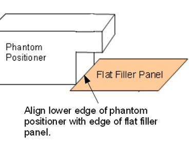
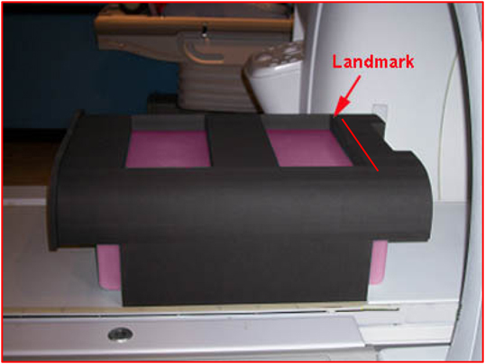
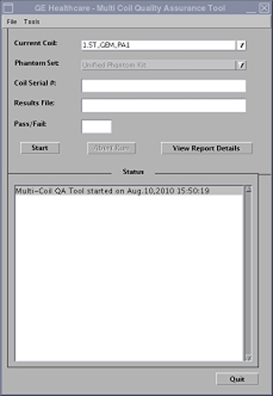

Operating Documentation
Direction 5670006, Rev# 1
Discovery MR750w GEM Service Methods
Module Version 4.0, Version Date 10/18/11
Operating Documentation |
| Required Persons | Preliminary Reqs | Procedure | Finalization |
|---|---|---|---|
| 1 | Not Applicable | 30 mins | Not Applicable |
The 1.5T GEM Coil MCQA will utilize the 1.5T phantoms, which are green in color. The 3.0T GEM Coil MCQA will utilize the 3.0T phantoms, which are pink in color.
| NOTE: | Coils do not ship with phantoms. Phantoms come in a unified phantom set with the MR System. |
| Item | Qty | Effectivity | Part# | Manufacturer | |
|---|---|---|---|---|---|
| TL Unified Phantom (For 1.5T) | 2 | - | 5343347 | - | |
| TL Unified Phantom (For 3.0T) | 2 | - | 5343347-2 | - | |
| PA Phantom Positioner (For both 1.5T and 3.0T) | 1 | - | 5405748 | - | |
| NOTE: | Prior to executing MCQA on 3.0T PA, perform Dual Drive Quadrature Calibration (seeDual Drive Quadrature Calibration Tool). |
Place the Flat Filler Panel (shown below) on the GEM table.
Illustration 1: Flat Filler Panel

Place two TL Unified Phantoms with the PA Phantom Positioner on the GEM table.
Ensure the alignment notch on the PA Phantom Positioner (shown below) faces toward the bore, and the side opposite of the alignment notch embraces the TL Unified Phantoms.
Ensure the bottom edge of the PA Phantom Positioner aligns with the edge of the flat filler panel as shown. The TL Unified Phantom extends over this alignment mark.
Illustration 2: Positioning of PA Phantom Positioner

Landmark at the edge of the hole on top of the PA Phantom Positioner, and press [Advance to Scan].
Illustration 3: Landmarking on PA Phantom Positioner

Run the Multi-Coil Quality Assurance Tool. Ensure that the correct coil is selected in the Current Coil field: 1.5T_GEM_PA1 (shown below) or 3.0T_GEM_PA1 for a 3.0T system.
Illustration 4: MCQA Tool Menu

No finalization steps.